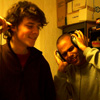
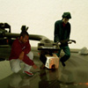

40 Winks is an instrumental hip hop group made up of two producers - padmo' and weedy - from Antwerp, Belgium.
- 2011: Join 40 Winks on a road trip to anywhere. Bring your music player and tell your honey you won’t be home for dinner. It's the trip, not the destination (new album for 2011).
- 2010: Antwerp's Brazzaville got the 40 Winks treatment with a remix for a new Project: Mooncircle compilation called "The Moon Comes Closer", which features 40 Winks, John Robinson, Robot Koch, Flako, and many more.
- 2009: In the First Place, Does Digital Harinezumi Dream? This strange question was accompanied with the release of a camera in Japan called Digital Harinezumi and a compilation to promote it. Following the concept, you can find a 40 Winks song on there inspired by an imaginary soundtrack!
- 2009: Germany's Project: Mooncircle is at it again with the new compilation "Silent in truth", which features 40 Winks, John Robinson, Jahbitat, and many more familiar and unfamiliar PMC members.
- 2008: A fresh new, more experimental album from 40 Winks entitled "the Lucid Effect" will be released on Project: Mooncircle in may 2008.
- 2007: Germany's Project: Mooncircle released a compilation 2LP in October, titled The heart on the right spot featuring 40 Winks, Dday One, CYNE, Mr Cooper, Rumpistol, Seven Star, Lackluster, Dave Ghetto, Strand, Epstein, Jahbitat, Manuvers and many more...
- 2007...: Miami based m3rck records released Sound Puzzle, our latest full album adventure. Sound Puzzle has been put out on CD and also on vinyl with selected tracks.
- 2006: Amsterdam based Little-D Soundlab released a compilation EP called "Weapons of Hope" featuring two 40 Winks songs.
- 2005: Japan's Escapism records gave us the oppurtunity to do a 12". The result was "Extended Pleasure", an EP released worldwide.
- 2005: Amsterdam based Little-D Soundlab made a sampler called "If luck would have it..." featuring new 40 winks songs to promote Little-D's first upcoming release.
- 2005: Japan's Swamp records reissued More Than Loops in Japan only. There are 3 bonus tracks on this release not included on the original album.
- 2004: Hypu Japan put out a promotional compilation on cd featuring 2 songs of our later to be released EP.
- 2003: More Than Loops was just that, more than just loops. This album was a cd showcasing what 40 Winks stood for and it turned out to be a real door opener.
- 2002: Our first planned release saw the light, a 60 minute tape with all new tracks & interludes of ours. It's called Hit the Hay.
- 2002: A demo cd named April to July officially marked the beginning. The demo featured, you guessed it, music made between April and July. We used "April to July" as a beattape to pass around and get people's attention.
- ...2000: Everything started on the turntables, cutting and scratching. Not long after that we started making beats, searching for our own sound.
Interview
- Serie B - full interview (english)
- Headphone Commute (english)
- KickSnare Magazine (dutch)
- What influenced us? (english)
- multilink magazine (english | pdf)
- On Point (dutch)

